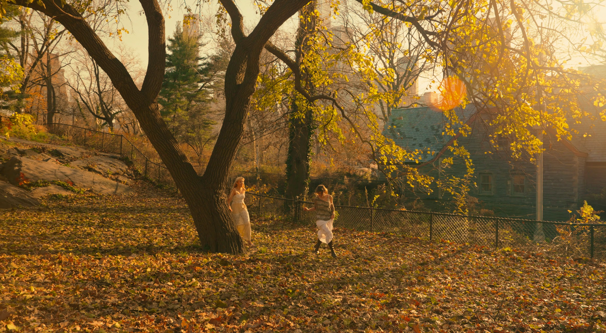
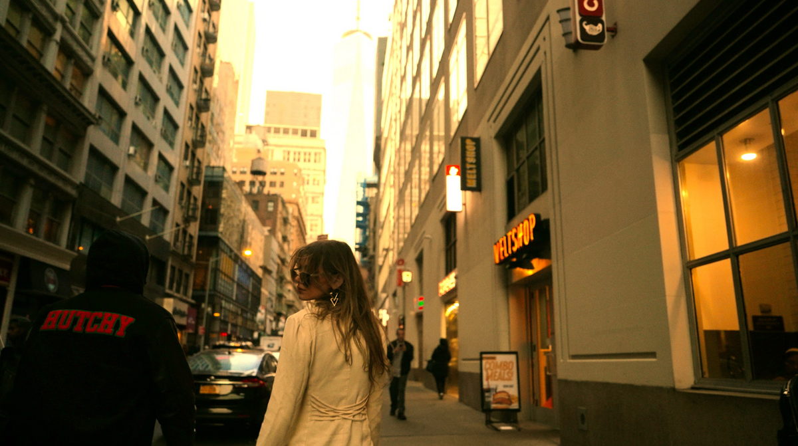
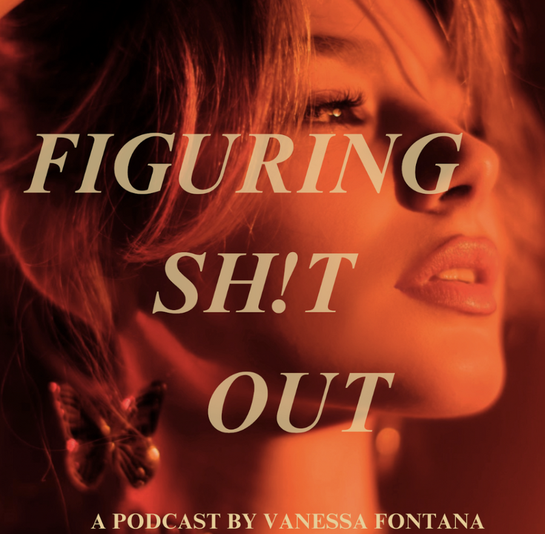
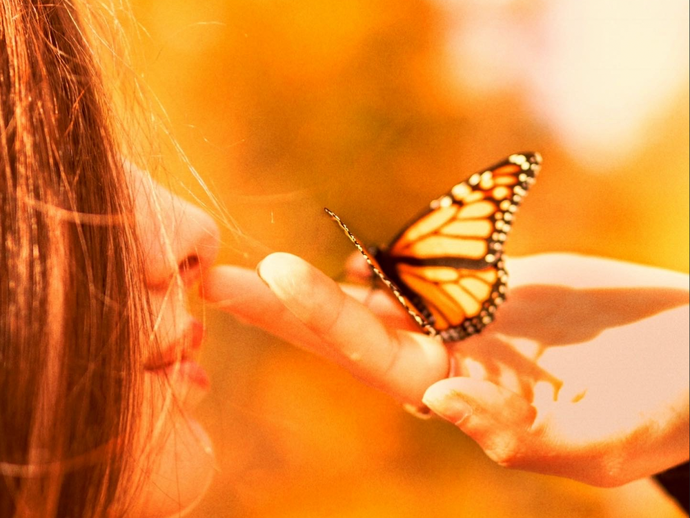

Figuring Sh!t Out?
You're in the right place.
A podcast, a community, and a movement for brave living, awakening,
and creatively reclaiming your power in a chaotic world.
Turning survival
into self‑expression
Figuring Sh!t Out exists as a mirror and a movement for those navigating the duality of modern life:
Through storytelling, spirituality, ancient philosophy, modern psychology, neuroscience, and creative reclamation — a way to live boldly within the paradox of the shadow and the light.

Hi, I'm Vanessa.
A writer, creator, facilitator, and speaker. I explore what it means to turn survival into self‑expression — to live creatively in the midst of chaos and find clarity even as we're still becoming.
My work is about courage in motion: embracing the duality of being and becoming, and creating a life that feels like your own — even while you're still figuring sh!t out.

Make art of
your existence
Launched from a New York City bedroom, Figuring Sh!t Out has grown into a top 5% podcast reaching a worldwide audience — diving into shadow work, inner‑child healing, clarity, courage, self‑trust, and living a life of purpose.
At once poetic and practical, the show invites you to live deeply and embrace the paradox of never having it all figured out — but moving forward anyways.

Community. Containers.
Connection.
Metamorphosis
A nervous‑system‑led sanctuary for creative self‑discovery. Weekly calls, guided practices, and a living creative community to reconnect with your voice, unlock creative flow, and bring your ideas to life.
Join the waitlistThe Road Less Travelers
Where transformation meets community. Ritual, creative reclamation, somatic practice, tools of ancient wisdom, and the power of being witnessed by others walking the same path.
Learn moreWords that found
their way back
